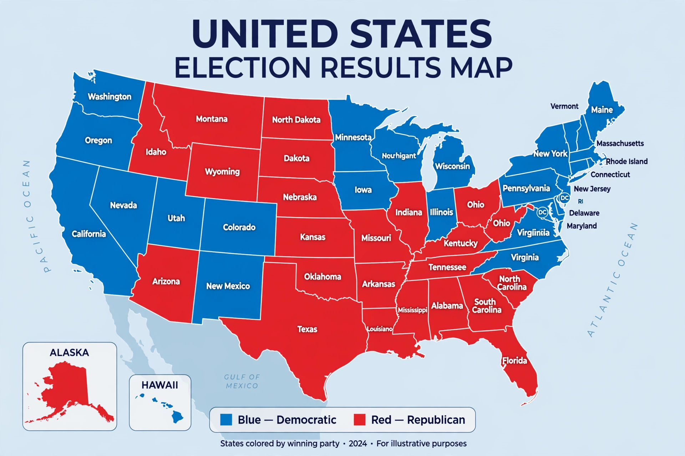

Red states and blue states

Red states and blue states are terms used in American politics to describe states of the United States that consistently vote for Republican (red) or Democratic (blue) candidates in presidential elections. The colour scheme became fixed during the protracted 2000 presidential election, when television networks standardised their maps — red for George W. Bush's states, blue for Al Gore's — and the labels entered everyday political vocabulary, later extending to "purple" for closely contested swing states.
Origin
Before 2000 the networks' colour assignments varied between elections and outlets; in 1976, for example, NBC coloured Jimmy Carter's states red. The weeks-long recount in Florida in 2000 kept the same map on screen so long that the red-Republican, blue-Democrat pairing stuck — reversing the international convention in which red is associated with parties of the left.
Geography
Blue states are concentrated on the West Coast, in the Northeast and the upper Midwest; red states dominate the South, the Great Plains and the Mountain West. Because states differ in competitiveness, presidential campaigns focus resources on a shrinking set of swing states, while "safe" states receive little attention despite their population.
Criticism
Commentators caution that the dichotomy exaggerates polarisation: states are won by margins, counties within "red" and "blue" states differ sharply (urban versus rural), and most voters live in politically mixed areas. County-level and population-weighted "purple America" maps are often proposed as a corrective.
See also: Swing state, Electoral College, Political polarization.